第13天：中间代码生成之流程控制语句
第13天：中间代码生成之流程控制语句
上节课我们讲了如何生成表达式的中间代码。这节课我们学习如何生成各种控制语句的中间代码。
先看下面的代码：
1 | |
第 7~10 行，翻译成中间代码是：
1 | |
我们忽略细节，把此中间代码的结构提取出来：
1 | |
可以看到，对于 while 语句，有几个要素：
- 第 1 行，开头的标签，@L1（叫什么名字无所谓），从这里开始做条件计算或者叫表达式求值
- 第 6 行，末尾的标签，@L2，此处表示离开了循环体
- 第 3 行的中间指令，“if(条件为假) goto @L2”意思是条件为假就跳转到 @L2，否则执行循环体里面的代码
- 第 5 行，无条件跳转，跳转到开头，再次做条件计算
要生成中间代码，就是要生成以上要素，并且把它们按照合适的顺序组合起来。
标签（或者说标号）也是中间指令，可以把它看成是特殊的中间指令。
生成标签
我们用 new_label_inst 函数生成标签。
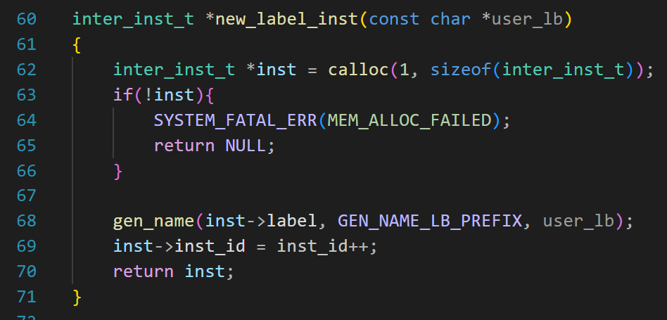
为了增加中间代码的可读性，可以给标签末尾加一个字符串，也就是上面的 user_lb 参数。如果不需要，这个参数就给 NULL；
第 68 行，GEN_NAME_LB_PREFIX 是一个宏
#define GEN_NAME_LB_PREFIX "@L"
以 @ 开头是为了和 C 源码标识符区分开。
第 68 行的 gen_name 代码如下：
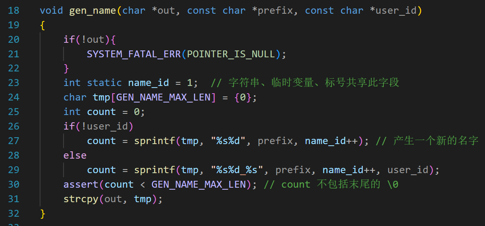
重点看第 29 行，使用 sprintf 函数格式化字符串，把 “@Lxxx_” 和用户的字符串拼接起来。xxx 是一个数字，也就是第 23 行的 name_id，每次使用后递增 1；
生成跳转指令
我们用 new_jump_inst 函数来生成条件跳转或者无条件跳转指令。
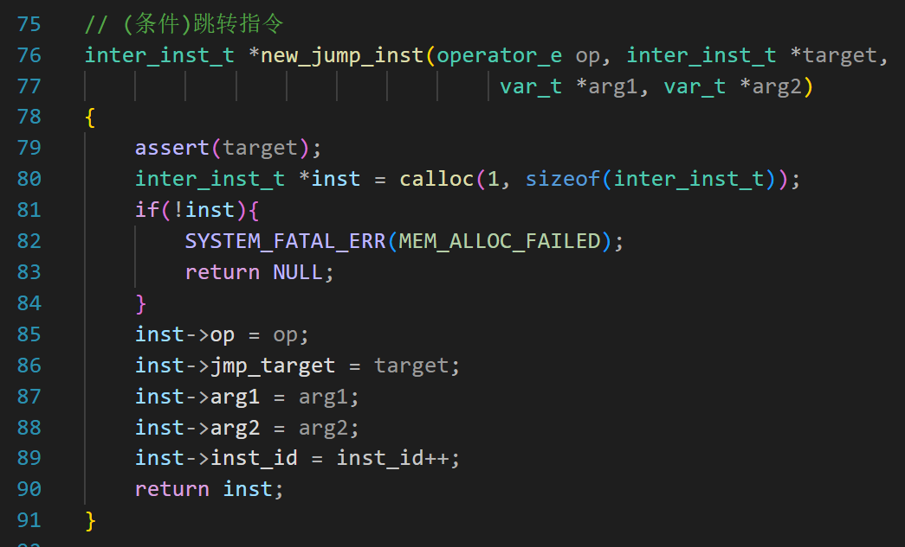
参数 op 有以下几种：
IR_OP_RET： 无返回值的函数返回；(arg1 和 arg2 用不上)
IR_OP_RET_VAL： 有返回值的函数返回 （ arg2 用不上）
IR_OP_JMP： 无条件跳转，相当于 goto (arg1 和 arg2 用不上)
IR_OP_JF： 条件为假（等于 0）则跳转 （ arg2 用不上）
IR_OP_JT： 条件为真（不等于 0）则跳转 （ arg2 用不上）
IR_OP_JE： arg1 和 arg 2 相等则跳转
IR_OP_JNE： arg1 和 arg 2 不相等则跳转
这里面的条件怎么理解呢？其实就是表达式的值
例如 while(xxx); if(xxx); for(; xxx;)等，这里面的 xxx 都是表达式，在生成中间指令的时候，会做表达式求值。
不管是函数返回还是各种跳转，返回点和跳转的目标都是标号，也就是 new_jump_inst 函数第 2 个参数 target。
while 语句
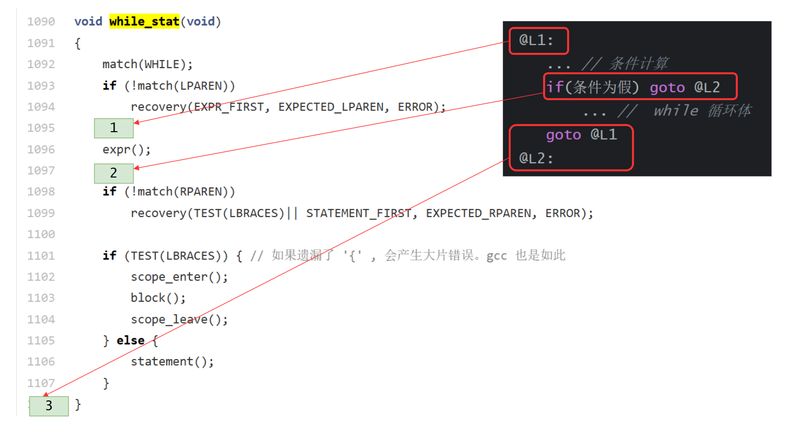
有了前面的铺垫，现在只需要按照箭头把标签或者中间指令添加到代码合适的位置。
修改后的代码：
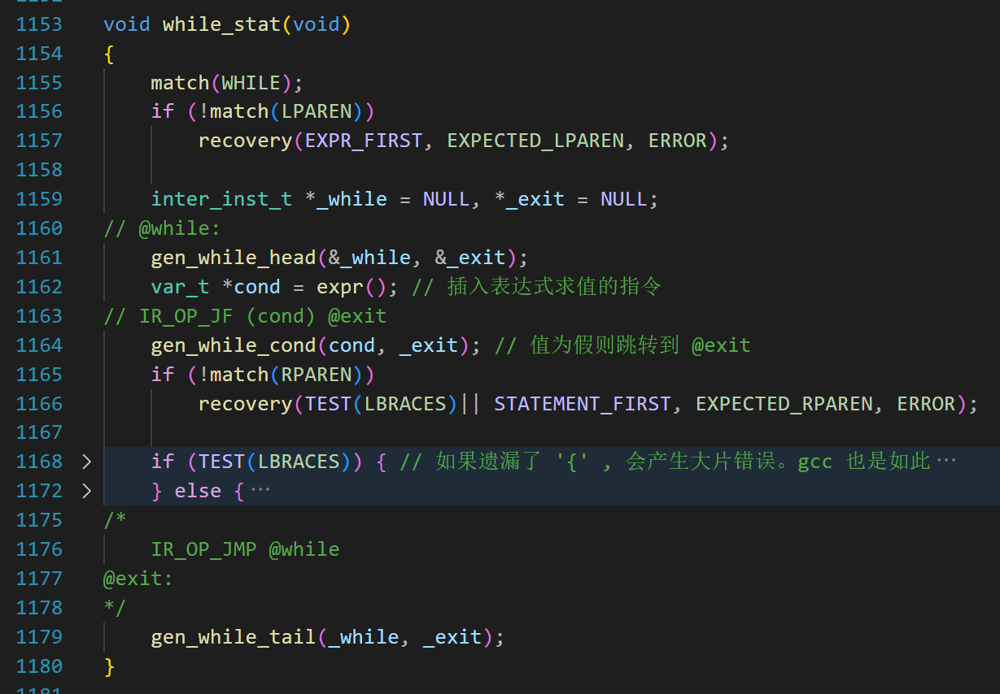
第 1161 行是 gen_while_head 函数，它的代码是
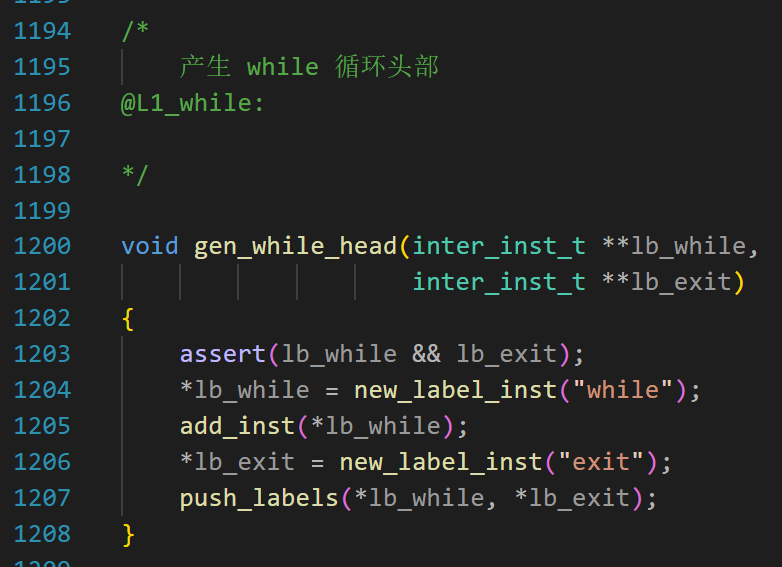
第 1204 和 1026 行，生成了 2 个标签，为了表述方便，叫它们“@while”和“@exit”，对应前文图中的 @L1 和 @L2
因为 C 语言不支持多值返回，所以我把 gen_while_head 这个函数设计成带有 2 个输出参数，因为 new_label_inst 函数的返回值是 inter_inst_t * 类型，所以输出型参数的类型是指向inter_inst_t * 的指针，也就是 inter_inst_t **
前面第 1159 行，我定义了 2 个 inter_inst_t * 类型的参数 _while 和 _exit，初始值都是 NULL，并把它们的地址作为参数传递给 gen_while_head ，当此函数执行后， _while 和 _exit 就分别指向生成的 “@while” 和 “@exit” 标签。
第 1205 行，意思是插入标签 “@while”，即把生成的 “@while” 标签（inter_inst_t 类型）插入到中间代码链表。
第 1207 行，先不用管，我们最后会说。
再看前面的 1162 行，增加 expr() 的返回值，改为 var_t *cond = expr();因为我们要对表达式求值。
第 1164 行， 插入 gen_while_cond 函数。此函数代码如下：
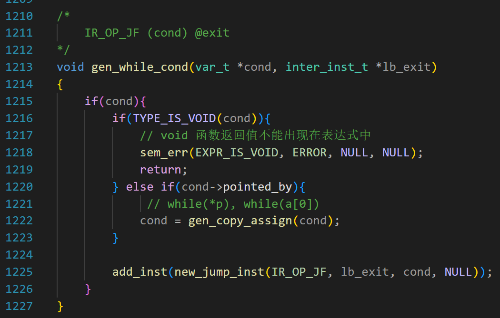
第一个参数就是 expr() 的返回值，第二个参数是前面生成的“@exit”标签的地址。
如果 expr() 有语法或语义错误，那么 cond 就是 NULL，所以第 1215 行判断 cond 是否为空。
第 1216 行判断 cond 是不是 void 类型，例如 foo() 函数是一个返回值是 void 的函数，那么写 while(foo())这种代码是不合法的。
1220 行判断 cond 是不是 *p 这种形式，如果是，先要生成中间代码 tmp = *p；
1125 行，生成中间指令 if(!cond) goto @exit
前面第 1179 行， 插入 gen_while_tail 函数。
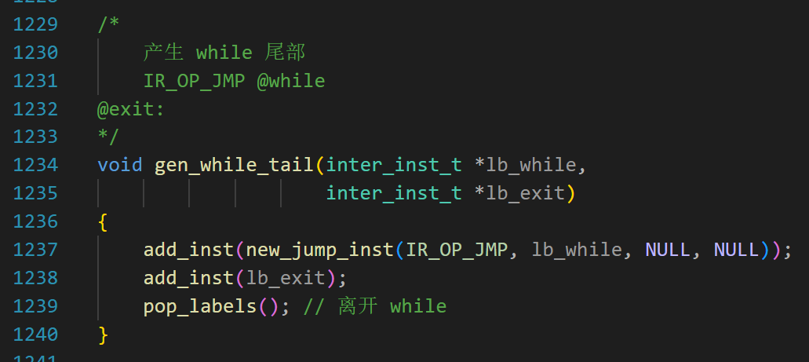
这个函数有 2 个参数，分别是前面生成的“@while”和“@exit”标签。
第 1237 行，生成指令 goto @while，无条件跳转到 @while，也就是前文图中的 @L1
第 1238 行，插入标签“@exit”
1239：先不管，后面会说。
这样 while 语句的中间代码生成就讲完了。我们趁热打铁，看看 do-while 语句。
do-while 语句
1 | |
7~10 行翻译成中间代码是：
1 | |
我们忽略细节，把此中间代码的结构提取出来：
1 | |
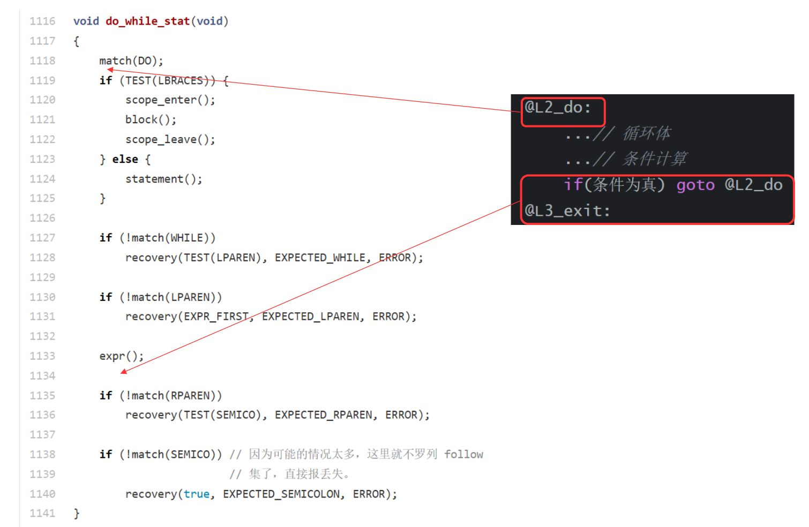
如上图所示，do-while 比 while 语句还要简单，分成 2 部分插入到代码中就可以了。
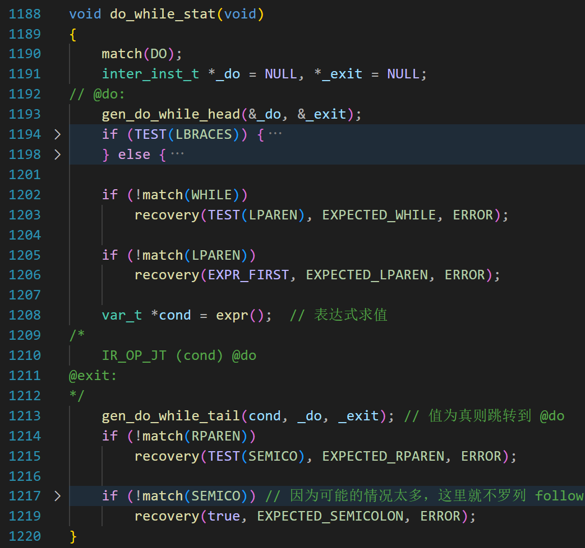
第一部分是在第 1193 行，插入 gen_do_while_head 函数。
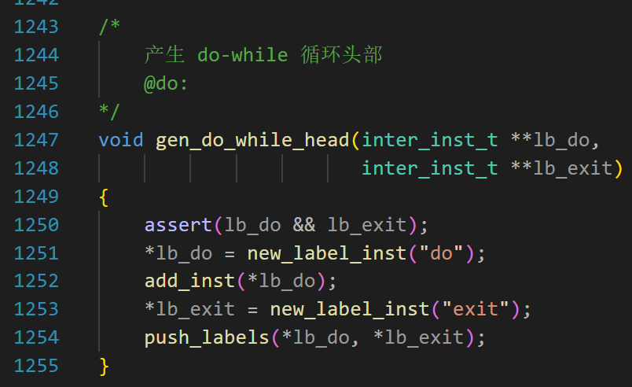
此函数的作用是生成 @do 和 @exit 标签，并且插入 @do 标签。
第二部分是在第 1213行，插入 gen_do_while_tail 函数。
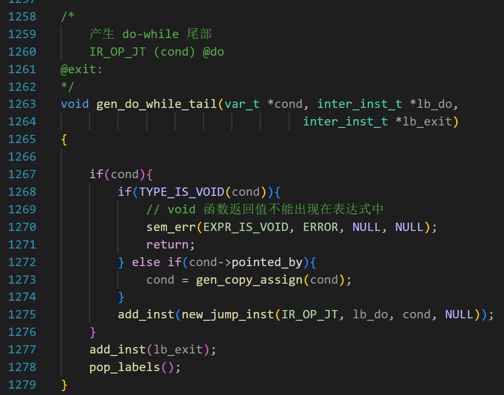
第 1275 行，插入指令 if(cond) goto @do
第 1277 行，插入标签 @exit
if-else 语句
有的读者说我是马后炮，不应该从生成的中间代码推出中间代码的结构，因为我们讨论的就是如何生成中间代码啊。
说得好！假设我们不知道 if-else 语句的中间代码是什么，那可以根据源码推出中间代码的结构。
1 | |
再把右边的注释整理一下，变成中间指令的语法。
1 | |
ok,中间代码的框架有了，现在考虑如何把中间代码分为几部分，插入到原有代码中：
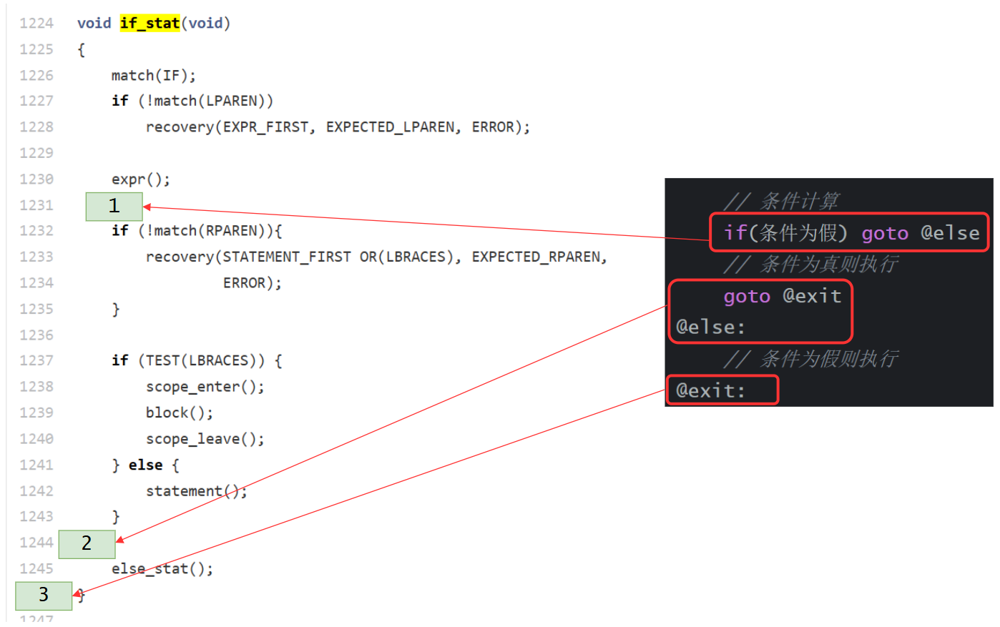
修改后的代码如下图：
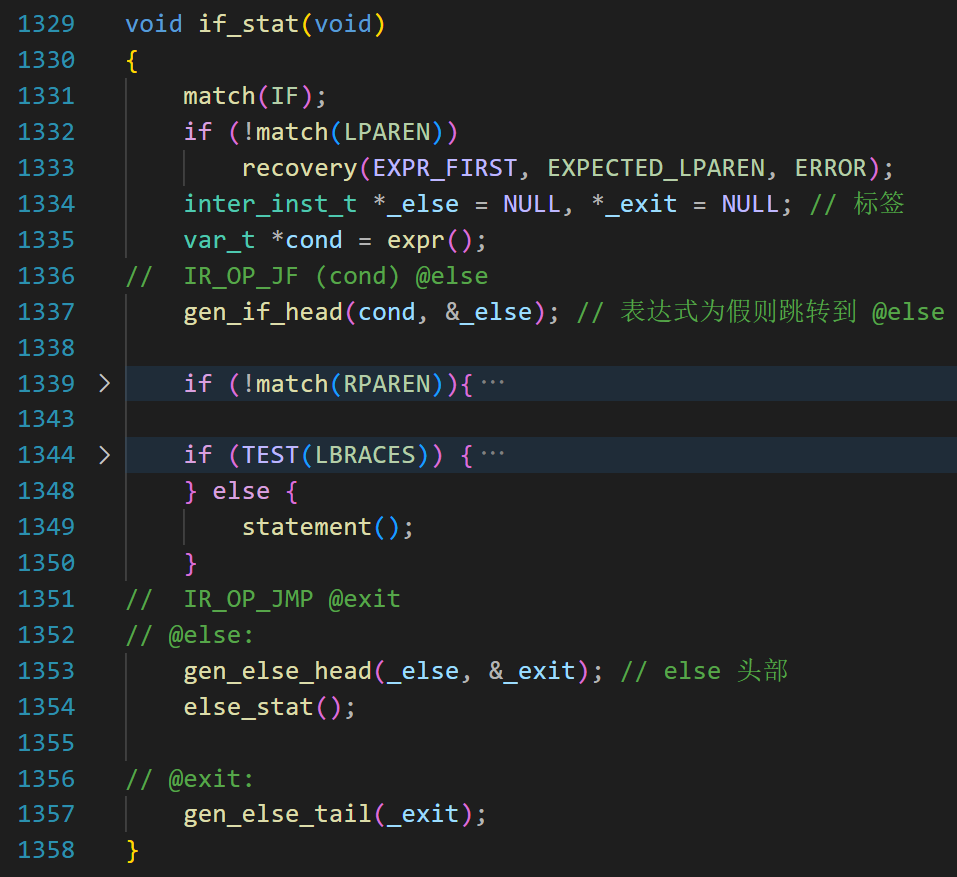
第 1337 行，插入 gen_if_head 函数（代码略）。此函数的主要功能是：
1、生成 @else 标签
2、添加指令 if(!cond) goto @else
第 1353 行插入 gen_else_head 函数（代码略）。此函数的主要功能是：
1、生成 @exit 标签
2、添加指令 goto @exit
3、添加标签 @else
第 1357 行插入 gen_else_tail 函数（代码略）。此函数的主要功能是添加标签 @exit
对了，如果是没有 else 分支的 if 语句呢？以上的代码依然适用，因为有没有 else 分支是在下面的 else_stat 函数中解析的。
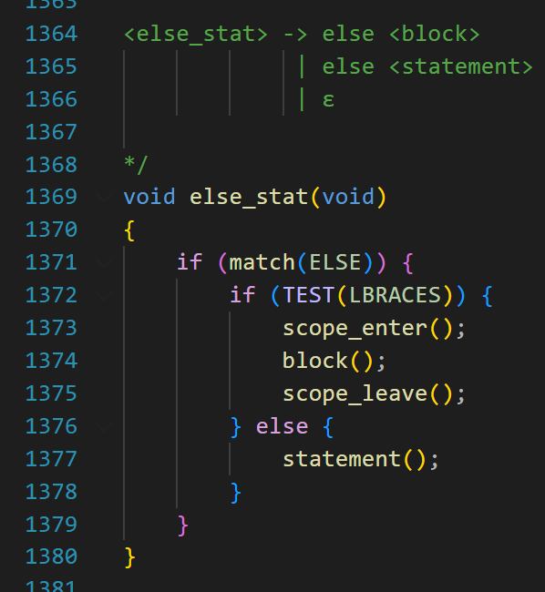
1 | |
假设没有 else 分支，那么 @else 和 @exit 之间就没有任何中间代码。 if()语句的逻辑不受影响。
for 语句
先写个 C 代码，尝试推出中间代码的结构。
1 | |
第 6~15 行就是我琢磨出来的中间代码结构。
不过仔细想想，有个问题。从中间代码生成的顺序上讲，第 9 行插入 if(!cond) goto @exit，然后是循环体的代码生成，最后是迭代表达式的代码生成；但是编译器解析源码的顺序是先解析迭代表达式，再解析循环体。
也就是说解析源码的顺序和中间指令的顺序不一致，这可怎么办呢？
办法还是有的。别忘了，中间代码是用链表保存的，链表的优点就是插入和删除节点都很方便。所以，在第 9 行插入 if(!cond) goto @exit 之后，我们做个标记，记录此时中间代码链表的最后一个节点。如图 1
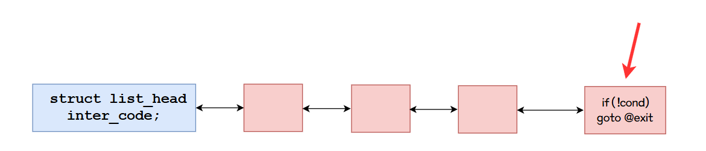
图1↑
然后，生成迭代表达式的中间代码。如图 2
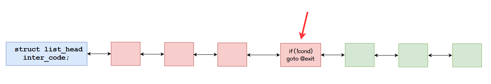
图2↑
此时，根据刚才标记的位置，找到迭代表达式的第一条中间指令（第一个绿色方块），从它开始到链表末尾，整体移动到另一个空的链表中。见图 3：
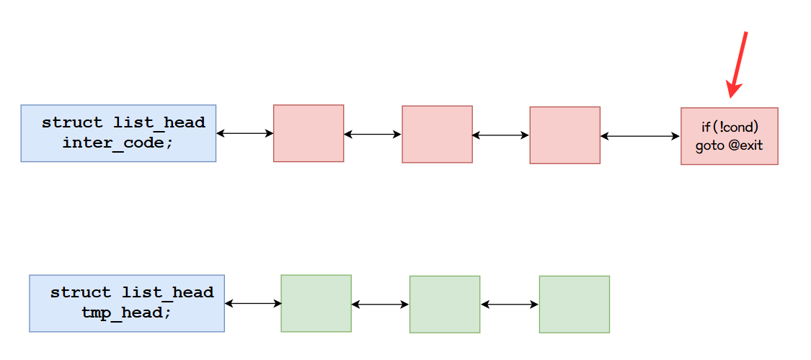
图3↑
再然后，继续生成循环体的中间代码，再插入标签@iter；如图 4
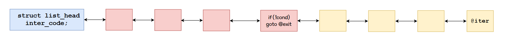
图4↑
最后，把临时链表上的指令整体移动到当前链表的末尾。如图 5
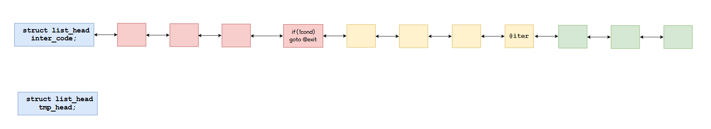
图5↑
这样就完成了“移花接木”.
整个流程分为 6 个步骤，我都标注出来了。
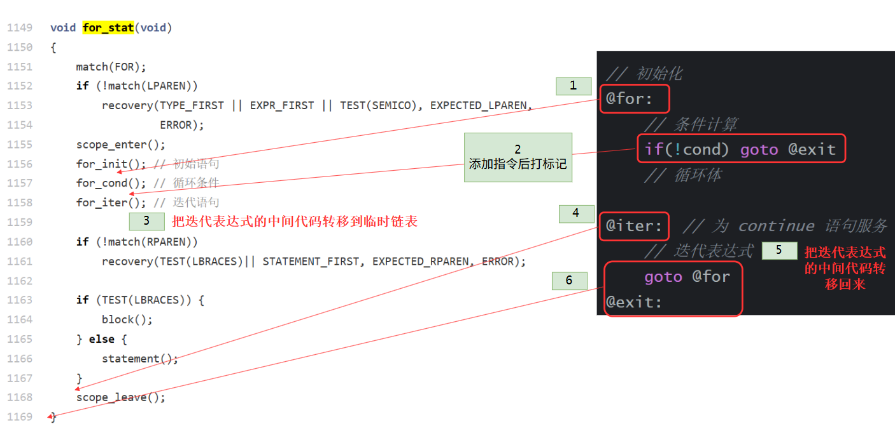
修改后的代码如下图。我为读者依次解释 6 个步骤。
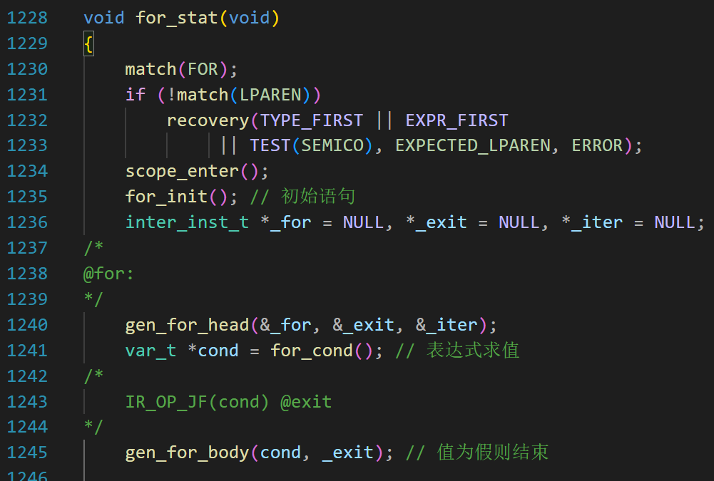
对于步骤 1：第 1240 行，插入函数 gen_for_head
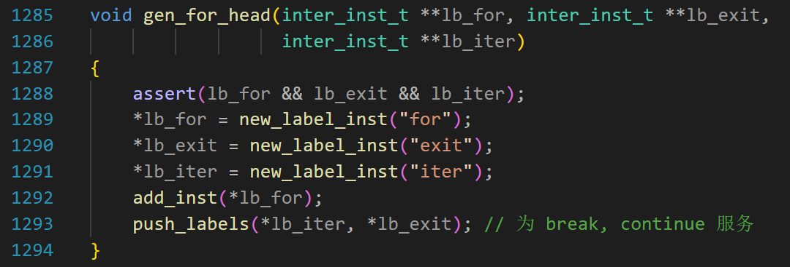
这个函数有两个作用，第一是生成标签 @for, @exit, @iter； @iter 这个标签是为 continue 语句服务的（后文会讲）；
第二是 1292 行，添加标签 @for；
对于步骤 2，第 1245 行，插入函数 gen_for_body（代码略），主要功能是添加指令 IR_OP_JF (cond) @exit；
另外，步骤 2 要打标记，见下面第 1248 行。
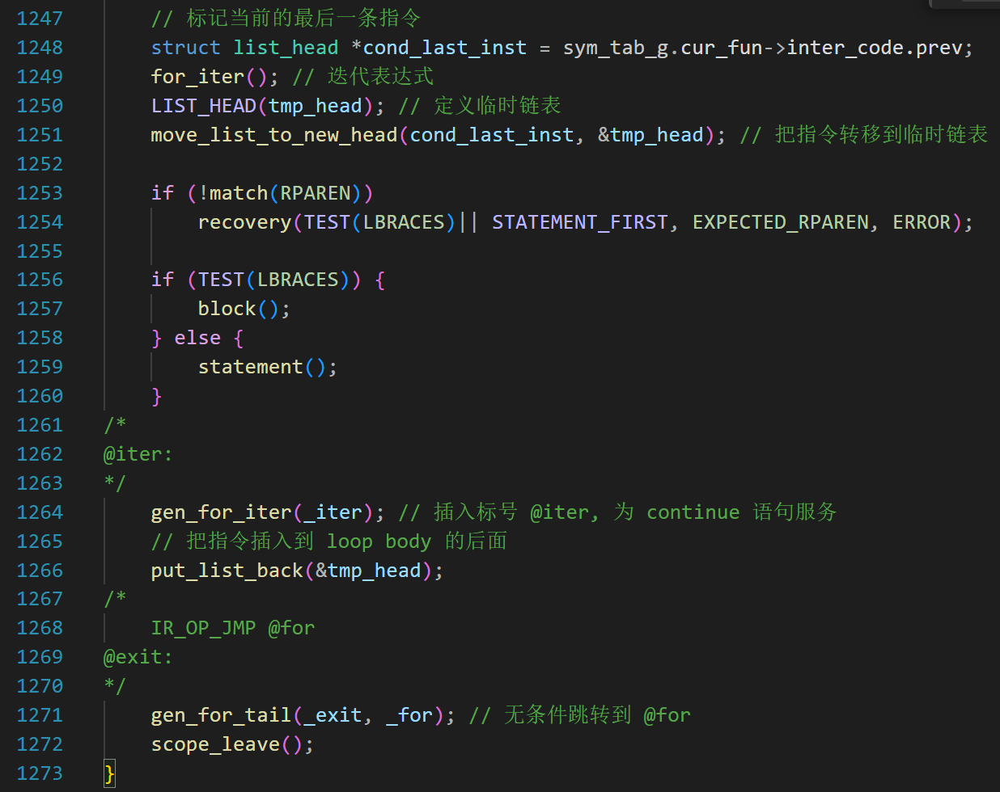
1248 行，定义局部变量 cond_last_inst，记录链表中最后一条指令的地址（链表节点的地址），因为从这条指令开始，将要生成迭代表达式的中间指令。
对于步骤 3，第 1250 行，定义一个空的链表；第 1251 行， 调用 move_list_to_new_head 函数把生成的迭代表达式的中间指令转移到空链表。
对于步骤 4，插入函数 gen_for_iter，此函数就干了一件事：添加 @iter；
对于步骤 5，第 1266 行，调用 put_list_back 函数，再把临时链表上的指令整体移动到当前链表的末尾。
对于步骤 6， 第 1271 行，插入函数 gen_for_tail，此函数添加指令 goto @for；添加标签 @exit
至此， for 语句的中间代码生成就讲完了。
switch-case 语句
先举个例子。
1 | |
请问 foo(3) 会输出什么？
有的读者是这么想的：先匹配 case 1，匹配不上，然后匹配 case 2, 还是匹配不上，接下来是 default，匹配上了，所以最后输出 I am default
其实不是这样，default 在其他所有的 case 标签都匹配不上才能轮到它，和它的位置无关。所以，当 case 2 匹配不上，会判断是否匹配 case 3，匹配不上，也没有其他的 case 标签了，只能匹配 default，于是最后输出 I am case 3。
另外，还有一点要注意，一旦匹配上了某个 case/default 标签，如果没有遇到 break 或 return，会继续执行下面的 case/default 标签。
例如：
1 | |
foo(4) 会输出什么？
I am default
I am case 3
因为 case 1,2,3 都匹配不上，所以执行 default 分支，输出 I am default 后，没有遇到 break 或者 return ,会继续往下执行，再输出 I am case 3；
现在可以构思中间代码了。思路是
1、和每个 case 标签对比（default 除外），一旦匹配上，就进入那个分支
2、如果所有的 case 标签都匹配不上，则看看有没有 default，有则进入 default 分支；没有则跳出 switch-case 语句；
注意，我把源码中的 case 1, case 2 等叫做 case 标签， default 关键字叫做 default 标签；如果提到“生成标签”或者“插入标签”，指的是中间代码中的标签或标号。请读者注意区分。
顺着这个思路和上面的代码，可以写出中间代码
1 | |
但是仔细琢磨，就会发现问题，a 的取值 1，2，3 和标号 @case_1、@case_2、@case_3 等都是在解析 case 语句的时候才能获取的信息，不可能还没有解析到 case 语句，就把第 1~4 行的中间代码构造出来。
所以这里和前面的 for 语句面临一样的困境，就是要生成的中间代码的顺序和解析源码的顺序不一致。
如何解决呢？有了前面 for 语句的经验，很容易想到我们可以先解析 case 语句，然后把 case 语句的中间代码移动到临时链表，再生成第 1~4 行的中间代码，最后把临时链表上的中间代码移动回来。
另外，在解析 case 语句的时候，还需要做语义分析，如果发现 case 值重复了，或者出现了一个以上的 default，则报错。
思路理清后，我们直接看修改后的代码。
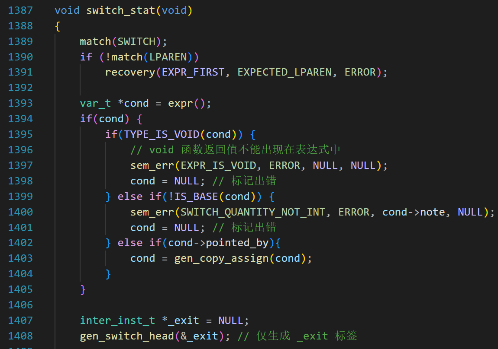
第 1395 行，判断 switch(cond) 的 cond，此变量不能是 void 类型，而且必须是整数。
第 1408 行，仅生成 @exit 标签。为什么要先生成这个标签？后文会讲。
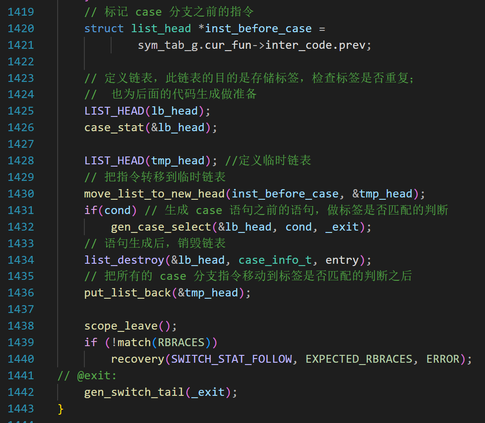
因为要移动 case 语句，所以要标记 case 语句的开头，第 1420 行标记出当前链表上最后一条中间指令。
第 1425 行定义了一个空的链表 lb_head，注意这个 lb_head 链表不是用来移动指令的，而是用来记录 case 信息的。
第 1426 行的 case_stat 解析 case 或者 default 标签及标签下面的语句。
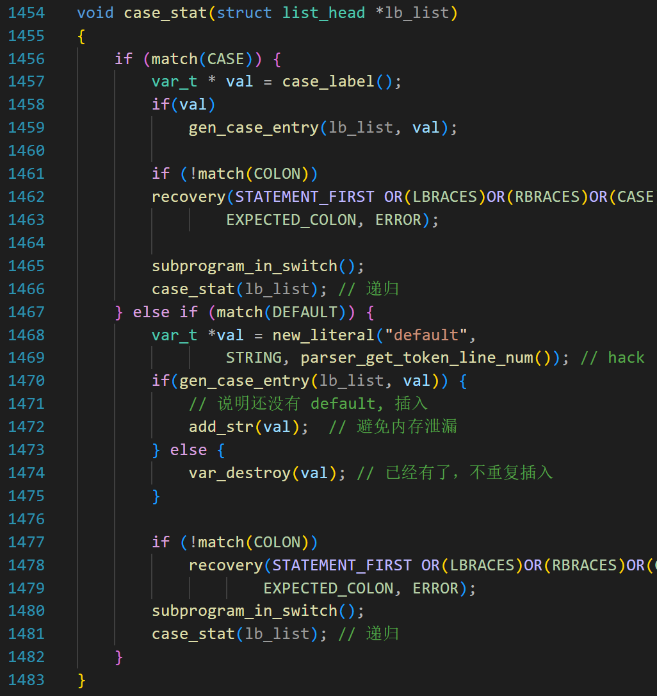
第 1457 行，给 case_label 函数增加返回值，并调用 gen_case_entry 函数
gen_case_entry 函数的作用是：
- 遍历 lb_head 链表，检查 val 或者 default 是否已经存在，如果存在则报错，返回 false
- 遍历完链表，如发现没有重复，则把 val 或者 default 加入链表；
- 插入标号 @case_x 或者 @default
如果遇到了 default 标签, 则执行第 1468 行的 new_literal,创建一个常量字符串“default”;然后调用 gen_case_entry，判断“default”标签是否已经存在，如果存在就报错，并返回 false,执行第 1474 行，释放常量字符串“default”占用的内存；否则会插入标号 @default，并且返回 true，然后执行第 1472 行，把常量字符串“default”加入符号表，作用是避免内存泄漏，不然第 1468 行 val 指向的内存会丢失。
所以，gen_case_entry 函数一箭双雕，一是语义分析，检查标签是否重复，二是生成每个 case 或者 default 对应的标号。
现在我们看看 gen_case_entry 的代码
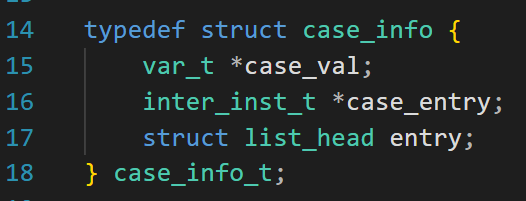
lb_head 链表初始状态是空，每当遇到新的 case 标签的时候，就构造上图的 case_info_t 结构体，把它加入 lb_head 链表
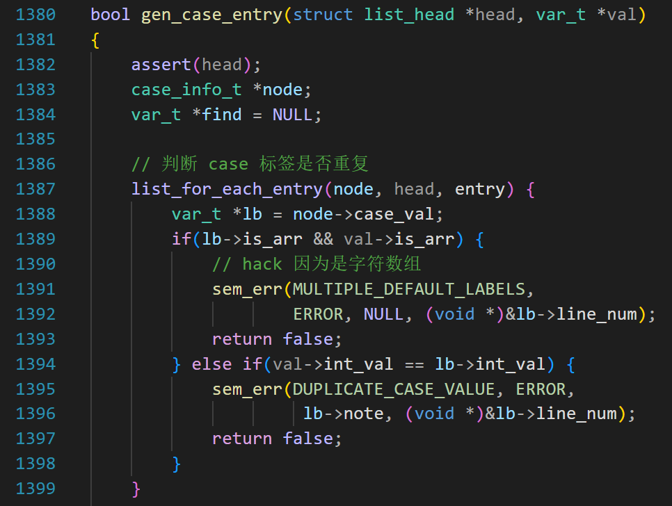
第一个参数是链表的头节点的地址，就是 &lb_head
第二个参数是前面 1457 行得到的值
第 1387 行，遍历链表，取出 case_info_t 中的 case_val 字段，先看第 1394 行，如果为真说明 case 标签重复，报错，返回 false;
对于 “default” 标签的识别比较特殊，因为它是一个关键字，不是一个整数，所以我们要构造出一个 var_t 类型的变量，为了把它和普通的标签区分开，我特意构造出常量字符串“default（其实叫什么都行）”（具体代码在前文的 case_stat 函数中），常量字符串是以字符数组的形式存储的，所以 is_arr 字段是 true，普通的 case 标签是按照整数常量存储的， is_arr 字段是 false,所以单靠这一点就可以判断链表中有没有 “default” 标签
所以第 1389 行使用 is_arr 字段判断是不是 “default” 标签。
我们继续看 gen_case_entry 的代码
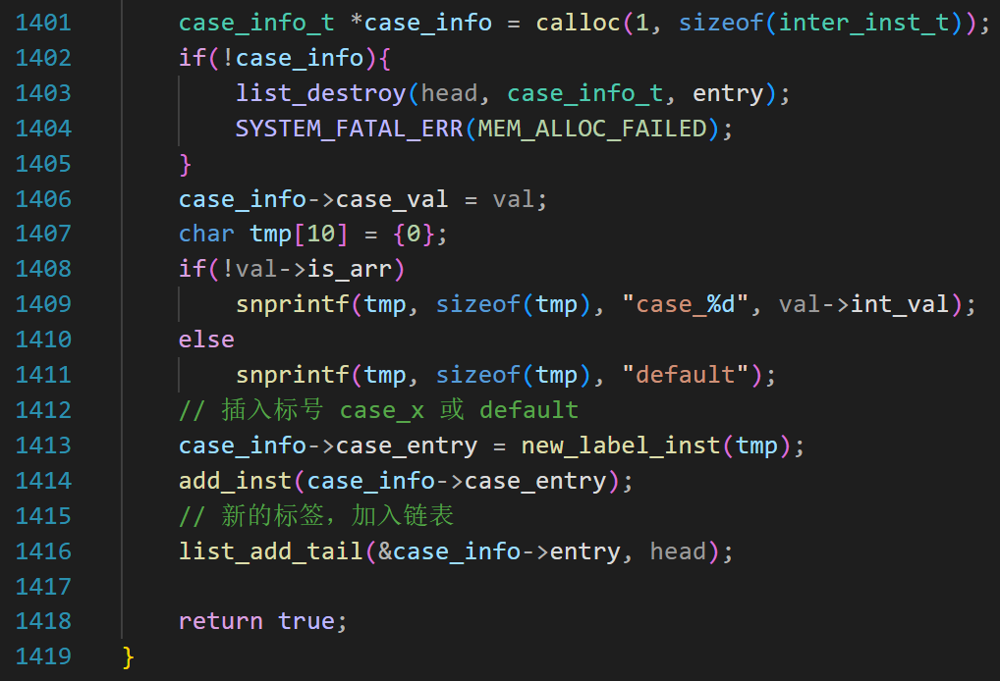
如果查找链表后没有发现重复，那么就执行第 1401 行，分配内存，第 1406 填写 case_val 字段；
第 1407~1411 是为了给要插入的标签（中间指令）起个名字，增强可读性。
第 1409 行，直接把 case 标签的值写进标号里，方便和源码对照。
第 1413 行，把生成的标号地址记录到 case_entry 字段，后面要用到。
第 1414 行向中间代码中插入标号。
第 1416 行，把构造好的 case_info_t 结构体加入 lb_head 链表。
现在，再回到 switch_stat 函数
当 1426 行执行后， case 分支或者 default 分支的中间代码已经生成，标号也插入了。
1428~1430 把 case 语句（包括 default）生成的中间指令转移到临时链表。
第 1432 行，调用 gen_case_select 函数，生成类似于下面的中间代码
1 | |
第 1434 行，lb_head 链表的使命已经完成，可以销毁它了。
第 1436 行，把临时链表上的指令移动回来。
第 1442 行，插入 @exit 标号。
gen_case_select 函数代码如下：
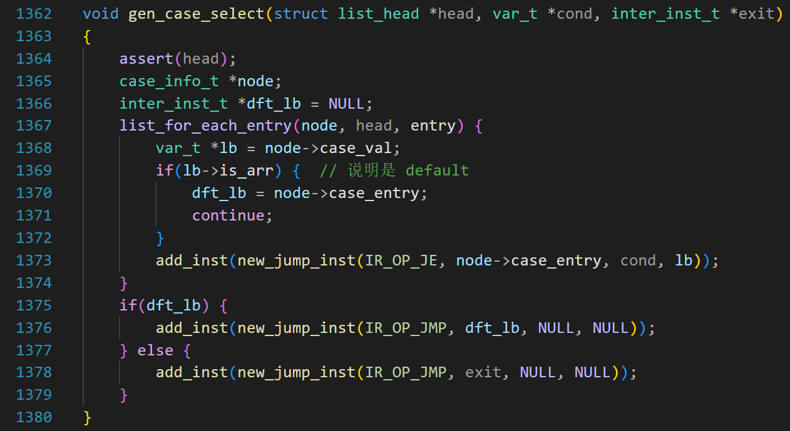
此函数遍历 lb_head 链表，拿出每个用户节点，如果是 default 则先不生成跳转指令，仅标记一下(1370 行)
如果不是 default 则生成 if(cond == lb) goto @case_xxx 的中间指令
这样就能保证先比较非 default 标签。
第 1375 行为真说明存在 default 标签，则最后生成 goto @default
为假则说明不存在 default 标签，则最后生成 goto @exit
函数入口和出口
下面是生成函数入口的中间代码。
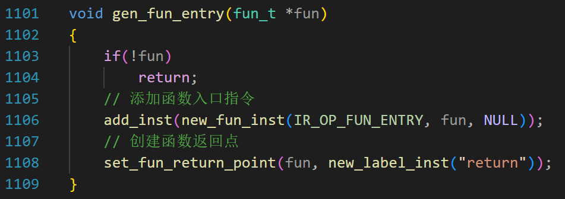
第 1105 行，添加函数入口指令，这个指令仅需要 2 个参数，一个是操作码 IR_OP_FUN_ENTRY，一个是 fun_t 类型的指针；
第 1108 创建函数返回点，其实就是生成一个标号，假设名字叫 @return
让 fun->ret_point 指向这个标号。这个标号有什么用呢？后文会说。
下面是生成函数出口的中间代码。
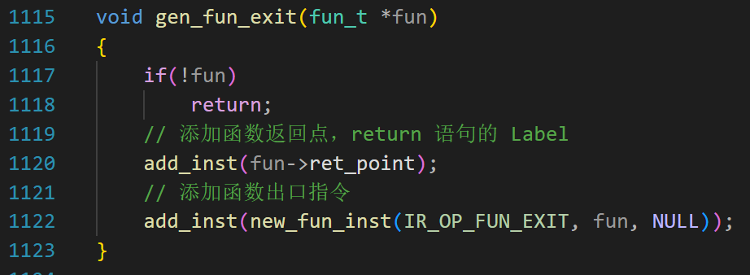
第 1120 行，插入 @return 标号。
第 1122 行，插入函数出口指令。
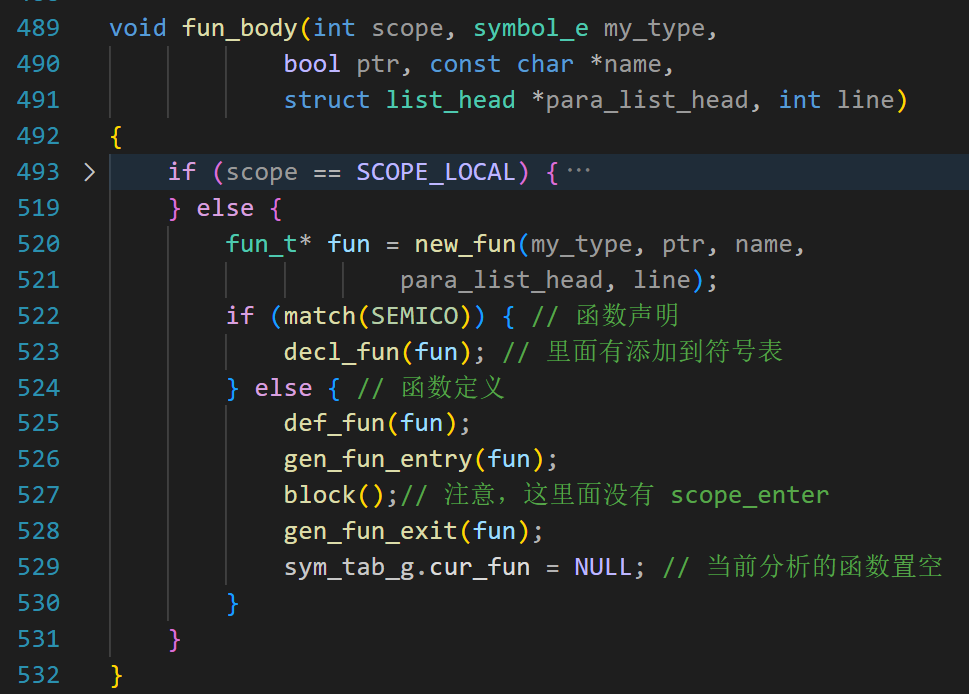
根据 526 和 528 行，可以知道函数的中间代码类似这样：
1 | |
开始的 ENTRY 会生成如下汇编代码
push ebp
mov ebp,esp
sub esp,xx
最后的 EXIT 会生成如下汇编代码
mov esp,ebp
pop ebp
ret
以上只是提一下，等后面生成汇编代码的时候，还会讨论。
return 语句
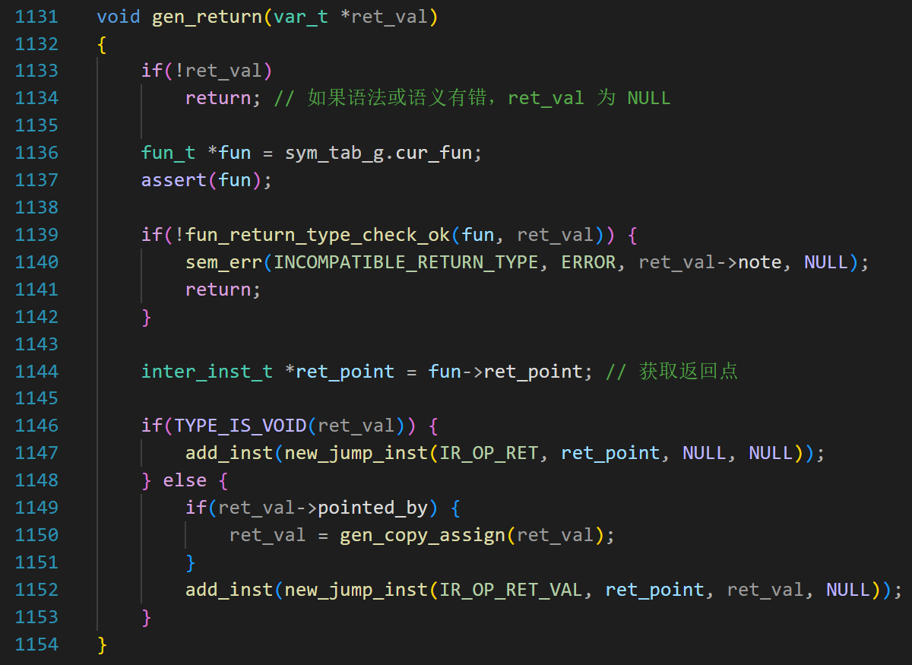
gen_return 函数用来生成 return 语句的中间代码。 参数是 return 语句的返回值，如果没有返回值呢？
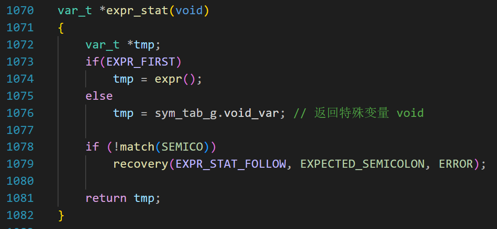
“return；” 当解析完 return 关键字后，会执行上面的 expr_stat() 函数，执行第 1076 行，获得特殊变量 void_var
我们再回到 gen_return 函数，第 1139 行语义分析，看看函数的返回值和 ret_val 是否匹配。
第 1144 行，拿到函数返回点的标号，也就是 @return
第 1147 行，如果函数返回值是 void，则生成中间代码 return goto @return；此中间代码被翻译成 x86 汇编时，就是 jmp @return 指令；
第 1152 行，当函数返回值不为空，则生成中间代码 return val goto @return；此中间代码被翻译成 x86 汇编时，先 mov eax, val 设置好返回值，再执行 jmp @return
break 和 continue 语句
break 可以用在循环语句及 switch-case 语句中，作用是跳出本层循环，或者跳出本层 switch 语句。
continue 可以用在循环语句中，作用是跳过当前这次循环中 continue 之后的语句，直接进入下一次循环判断（对于 while, do-while）或者迭代表达式的求值（对于 for）。
我们可以用无条件跳转实现 break 和 continue 语句的中间代码。
下面的表格列出了四种控制语句中 break 和 continue 语句如何翻译。
注意，下表格的标签名仅是一个简称，实际代码中会用 gen_name 函数生成标签，格式类似 @Lxx_exit，保证标签名不会重复。
| 语句类型 | break（从 end 栈取标签） | continue（从 begin 栈取标签） |
|---|---|---|
| while | goto @exit | goto @while |
| do-while | goto @exit | goto @do |
| for | goto @exit | goto @iter |
| switch-case | goto @exit | 非法；让 NULL 入栈 |
另外，不管是循环还是 switch-case 都是可以嵌套的，每一层都有自己的标签，为了让 break 和 continue 语句跳转到正确的标签，我们需要动态跟踪每一层的标签，这和我们之前跟踪大括号记录作用域很像，所以同样用栈来实现。
我们准备 2 个栈，一个叫 begin 栈，用来存放 continue 语句要跳转的标签；另一个叫 end 栈，用来存放 break 语句要跳转的标签。
开始的时候这两个栈都是空的，每当进入控制语句（上面表格中的四种之一，if-else 不算），就把一对标号入栈(准确说是标号的地址)。
当遇到 continue 语句，就获取 begin 栈栈顶的标签，生成 goto @xxx 指令；当遇到 break 语句，就获取 end 栈栈顶的标签，生成 goto @yyy 指令；
有人问 switch-case 语句中遇到 continue 怎么办？因为 continue 不能用在 switch-case 中，所以要报错。为了解决这个问题，当进入 switch-case 语句的时候， @exit 标签入 end 栈，NULL 入 begin 栈。这样当在 switch-case 语句中遇到 continue 的时候， begin 栈栈顶就是 NULL 这个特殊值，我们就知道出错了。
同理，如果是下面的代码：
1 | |
这样写也是非法的，break 只能出现在循环语句或者 switch-case 中。
对于这种情况怎么处理呢？此时栈为空，当栈为空的时候，如果要获取栈顶的标签，就返回 NULL，表示出错了，和上面是一个道理。
注意，获得栈顶标签和弹出栈顶标签是不一样的，前者只是去栈里面看一看栈顶是什么，后者是把栈顶的元素拿走，这样栈里面就少了一个元素。
当离开控制语句的时候，需要出栈。
例如下面的代码，请读者看我的注释。
1 | |
原理说完了，下面看代码。
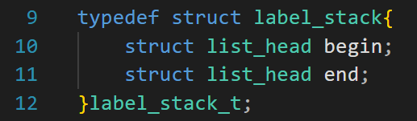
第 9~12 行，我们定义一个结构体，里面存放 2 个链表的头节点。代表 begin 栈和 end 栈。
1 | |
1~5 行，这是栈初始化的代码，在编译器初始化的阶段调用。
第 11 行，push_labels 函数用来把一对标签入栈。
gp_node_add_tail 函数是之前讲过的，这里再贴一下代码。
1 | |
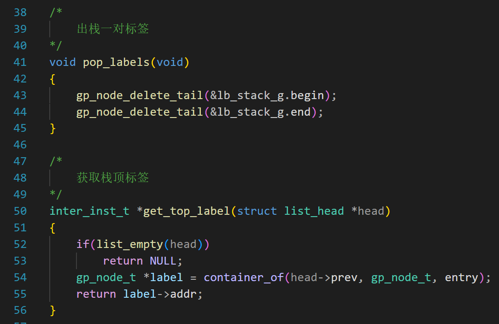
获取栈顶标签的函数是 get_top_label，从第 50 行开始。
首先判断链表是否为空，为空则返回 NULL；
否则，利用 head->prev 获取链表最后一个元素（也就是栈顶的元素，链表的尾巴对应栈顶）
第 55 行，返回标签的地址。
现在看第 41~45 行，如何出栈一对标签？其实就是把链表尾部的节点删除。
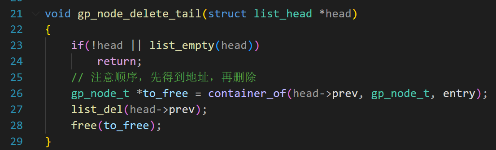
第 26 行得到最后一个节点的地址，第 27 行把这个节点从链表拿下来，这两步顺序不能交换。
第 28 行释放空间，注意不是释放标签自身的空间，是释放 gp_note_t 这个结构体的空间。
有了以上铺垫，再看代码就容易了。
这是前面讲过的函数，第 1207 行，刚进入 while 循环的时候，把 @while 和 @exit 标签入栈。
第 1239 行，标签出栈，因为这时候已经离开 while 循环了。
do-while 语句类似，不再赘述。
第 1293 行，进入 for 语句的时候，把 @iter 和 @exit 入栈。
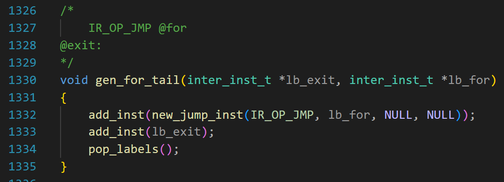
离开 for 语句的时候，第 1334 行，把标签出栈。
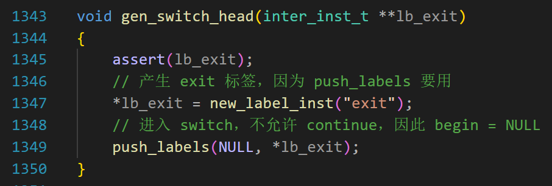
进入 switch 语句的时候，第 1349 行，把 NULL 和 @exit 入栈。出栈的代码就不贴了。
成果展示
for 循环两层嵌套
测试源码：
1 | |
生成的中间代码如下：
（最左边的是指令的编号）
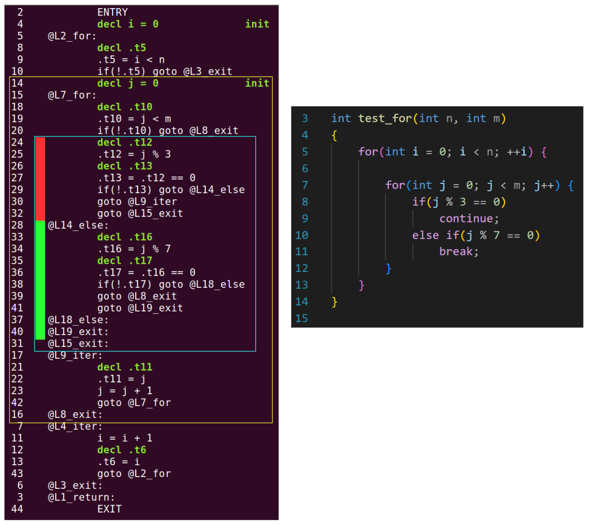
首先，黄色框外面是外层 for 循环的初始化、条件计算、迭代计算、退出标签。
4： decl i = 0; 变量 i 的初始化，仅执行一次。
5： 标签 @L2_for，从这里开始到黄色框上面为条件计算和判断；为真则执行循环体（黄色框里面），为假则跳出循环（goto @L3_exit）
当循环体执行完毕后，会遇到7： @L4_iter 这个标签，这是为迭代表达式生成的标签，接下来执行 11~13, 然后是 43， goto @L2_for，再次进入循环条件的计算；
看来外层循环没有什么问题。现在看内层循环。
14：变量 j 的初始化，对于内层循环，它只执行一次；但是对于外层循环，每次都会执行。
15：标签 @L7_for， 从这里开始到蓝色框上面为条件计算和判断；为真则执行循环体（蓝色框里面），为假则跳出循环（goto @L8_exit）
当循环体执行完毕后，会遇到17： @L9_iter 这个标签，执行 21~23，然后是 42， goto @L7_for，再次进入循环条件的计算；
看来内层循环也没有问题。
现在我们看看内层循环里面的 if-else 语句和 break, continue 语句。
24~29 是 if 条件判断，为真则执行 30：goto @L9_iter（对应源码的 continue）；为假则 goto @L14_else
前文已经分析了，@L9_iter是内层循环的迭代标签，对应右边代码的 j++ 的入口,所以 continue 的翻译没有问题。
32：goto @L15_exit，意思是执行完 if 语句后跳转到末尾的标签，也是对的。
最后我们看看 28~40 （图中绿色条状）的指令。它对应的是 if(j % 7 == 0) break;
37:@L18_else:
40:@L19_exit:
因为没有 else 分支，这两个标签之间没有语句，也是对的。
39:goto @L8_exit ，这句应该对应 break;跳出本层循环。@L8_exit 确实是内层循环结尾的标签。
switch 两层嵌套
测试源码
1 | |
生成的中间代码如下：
43~47，根据 m 的值生成 goto 到不同标签的跳转指令；当所有 case 值都不匹配，会执行 47：goto @L10_default；这满足了前文说的“default 在其他所有的 case 标签都匹配不上才能轮到它”。
中间代码的标签顺序，和右边源码的标签顺序是一致的。
如果有 break，则翻译成跳转到本层 switch 语句的 @exit 标签。例如 9：goto @L2_exit 和 29：goto @L14_exit；
黄色框里面的是内层的 switch 语句。因为没有 default,所以当所有 case 标签都匹配不上时，生成了 36： goto @L14_exit
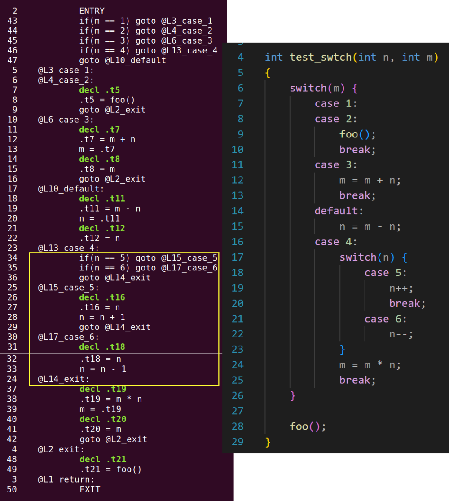
本文的内容到这里就结束了，至此，我们完成了中间代码的生成。恭喜你学到这里！